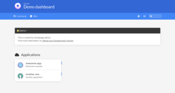

Homer es el lugar desde donde parten todos los servicios que tengo instalados en mi Raspberry y VPS.
Es un servicio muy ligero que podemos instalar en nuestra Raspberry Pi o Servidor, PC,... para tener a un click todos los servicios y webs favoritas.

Lo que más me gusta es que es muy facil de configurar desde el archivo config.yml y en el mensaje que aparece al principio, podemos incrustar un código personalizado en html.
El docker es multiarquitectura. Funciona tanto en amd64 como ARM (Raspberry).
En mi caso, he utilizado del puerto 81 para acceder a Homer.
version: "2"
services:
homer:
image: b4bz/homer
#To build from source, comment previous line and uncomment below
#build: .
container_name: homer
volumes:
- $HOME/docker/homer/assets/:/www/assets
ports:
- 81:8080
environment:
- UID=1000
- GID=1000
restart: unless-stopped
En esta ruta $HOME/docker/homer/assets/, tenderemos acceso al archivo de configuración config.yml, así como el directorio donde guardaremos los iconos.
Estos son los atajos de teclado:
/ Empezar a buscar.Escape Deja de buscar.Enter Abra el primer resultado coincidente (respeta la _targetpropiedad del marcador ).Alt / Option + Enter Abre el primer resultado coincidente en una nueva pestaña.Este es el archivo config.yml por defecto que trae homer
title: "Dashboard" # Título
subtitle: "Homer" # Subtítulo
header: true
footer: '<p>Created with <span class="has-text-danger">❤️</span> with <a href="https://bulma.io/">bulma</a>, <a href="https://vuejs.org/">vuejs</a> & <a href="https://fontawesome.com/">font awesome</a> // Fork me on <a href="https://github.com/bastienwirtz/homer"><i class="fab fa-github-alt"></i></a></p>' # set false if you want to hide it.
columns: 3 # 3 Columnas de iconos con servicios
connectivityCheck: true
theme: default
colors:
light: # Colores del tema claro
highlight-primary: "#3367d6"
highlight-secondary: "#4285f4"
highlight-hover: "#5a95f5"
background: "#f5f5f5"
card-background: "#ffffff"
text: "#363636"
text-header: "#ffffff"
text-title: "#303030"
text-subtitle: "#424242"
card-shadow: rgba(0, 0, 0, 0.1)
link-hover: "#363636"
background-image: ""
dark: # Colores del tema oscuro
highlight-primary: "#3367d6"
highlight-secondary: "#4285f4"
highlight-hover: "#5a95f5"
background: "#131313"
card-background: "#2b2b2b"
text: "#eaeaea"
text-header: "#ffffff"
text-title: "#fafafa"
text-subtitle: "#f5f5f5"
card-shadow: rgba(0, 0, 0, 0.4)
link-hover: "#ffdd57"
background-image: ""
message: ~ # Mensaje en formato html y entre comillas
links: [] # Enlaces en la cabecera del dashboard
services: [] # Servicios con sus iconos
Yo en mi caso, he seleccionado los colores del tema Nord que están en este repositorio de GitHub:
Para añadir en el apartado message, utilizaremos código html.
Para añadir una cajetilla de búsqueda de whoogle , que permita hacer búsquedas manteniendo la privacidad respecto a Google, añadiremos en el archivo de configuración config.yml:
message:
content: '<form action="https://whooglesearch.net/search" method="get"><input type="text"
name="q" placeholder="Busca en Whoogle" style="width: 100%" spellcheck="false" autofocus="true" onkeydown="handleKeyPress(event)"/></form>'
¿Te gusta más google?
message:
content: '<form action="https://google.com/search" method="get"><input type="text"
name="q" placeholder="Busca en Google" style="width: 100%" spellcheck="false" autofocus="true" onkeydown="handleKeyPress(event)"/></form>'
Si quieres encontrar más iconos para Homer, accede a este repositorio en GitHub:
Publicado por Angel el Monday 24 May del 2021
También te puede interesar:
Powered by org-bash-blog
Written in OrgMode with Emacs and converted to HTML with Pandoc

Este obra está bajo una licencia de Creative Commons Reconocimiento-NoComercial-CompartirIgual 4.0 Internacional.